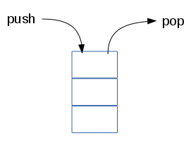

Raconté par Vincent Jugé
sur la base d'un cours créé par Rémi Forax
indexOf() utilise == pour trouver la première occurence d'un élément et renvoie son index (ou -1).
lastIndexOf() utilise == pour trouver la dernière occurence d'un élément et renvoie son index (ou -1).
Si on trouve le résultat, on peut arrêter la boucle.
Ne jamais sortir d'une boucle en changeant un drapeau !
join(delimiteur) permet de créer une chaîne de caractères avec tous les éléments séparés par un délimiteur.
split(delimiteur) permet de créer un tableau
à partir d'une chaîne de caratères
en découpant
suivant le délimiteur.
text.split() est le dual de array.join().
push() permet d'ajouter un élément à la fin d'un tableau.
On peut aussi ajouter un élément en case array.length du tableau array.
Il existe également une méthode pop() qui retire le dernier élément permettant d'utiliser un tableau comme une pile.

shift() décale les éléments vers la gauche
et supprime (et renvoie) le premier élément.
unshift(elt) décale les éléments sur la
droite
et insère l'élément elt à gauche
(et renvoie la longueur du tableau obtenu).
Ces deux méthodes ont un temps d'exécution qui dépend du nombre d'éléments.
slice(start, end) permet d'extraire la sous-partie [start, end[ d'un tableau sous forme d'un nouveau tableau.
Contrairement aux méthodes précédentes, slice ne modifie pas le tableau sur lequel on appelle la méthode mais renvoie un nouveau tableau.
splice(start, deleteCount, elements) supprime
deleteCount éléments
à partir de l'index start
et les remplace par des elements.
Attention à ne pas confondre slice et splice !
La fonction sort() permet de trier un tableau sur place.
Par défaut, les comparaisons se font sur les chaînes de caractères.
Ce n'est pas forcément ce que l'on veut !
On utilise une fonction de comparaison
pour paramétrer sort(fun) !
L'appel à la fonction cmp(v1,v2) doit renvoyer :
Évidemment, on peut passer notre fonction directement en argument.
On peut mettre des fonctions dans un tableau…
mais gare à quiconque utilise let trop tôt !
La même variable i est utilisée par toutes les closures !
forEach(fun) applique la même fonction à chaque valeur.
C'est comme une boucle, mais sans écrire la boucle
!
map(fun) applique la même fonction à chaque valeur dans un nouveau tableau.
filter(fun) permet d'obtenir un tableau de valeurs respectant une propriété (un prédicat).
some renvoie true dès qu'une valeur vérifie la propriété.
every renvoie true si toutes les valeurs vérifient la propriété.
Les méthodes forEach, map, filter, some et every prennent une fonction avec 2 arguments (élément, index) en paramètres.
En JavaScript, une fonction peut prendre moins de paramètres que d'arguments !
reduce(fun, init) résume par une valeur en appliquant une fonction d'agrégation qui lit le tableau de gauche à droite.
Le premier argument de fun doit toujours
être l'accumulateur !
Il est possible de combiner les opérations : par exemple, compter le nombre de mots commençant par 'b'.
Ces fonctions ne sont pas définies pour les HTMLCollection !